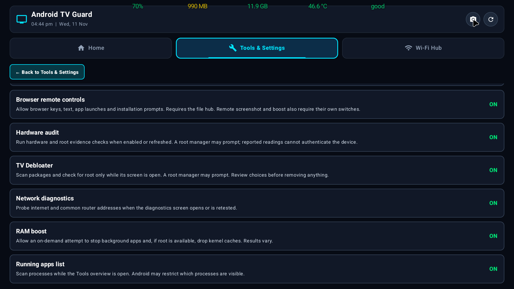
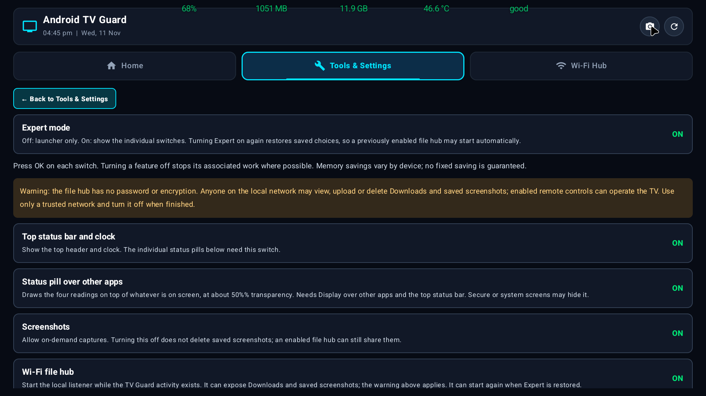
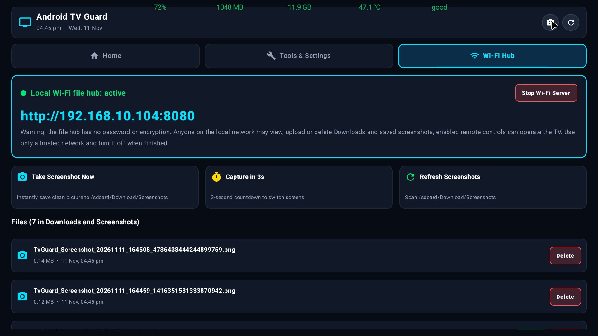
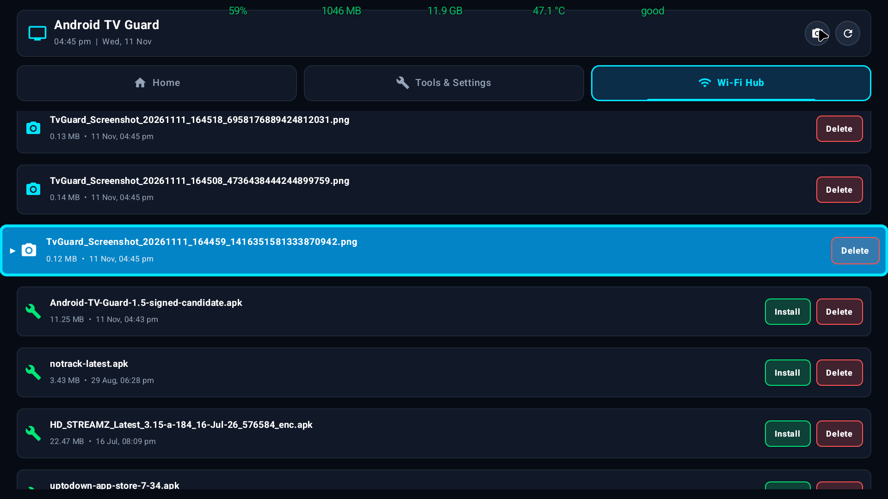
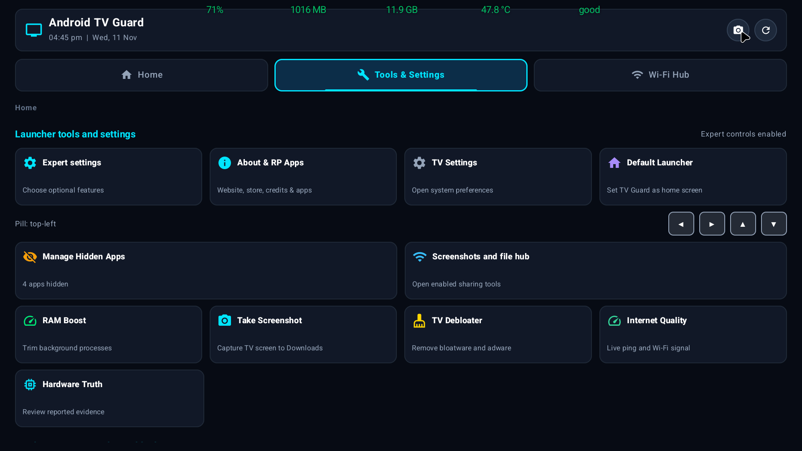
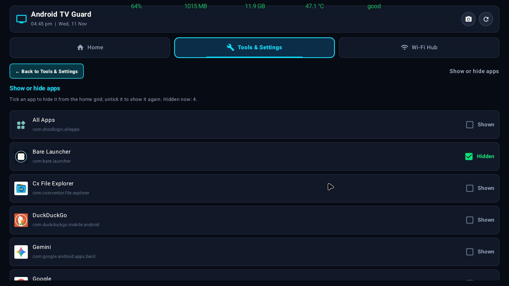
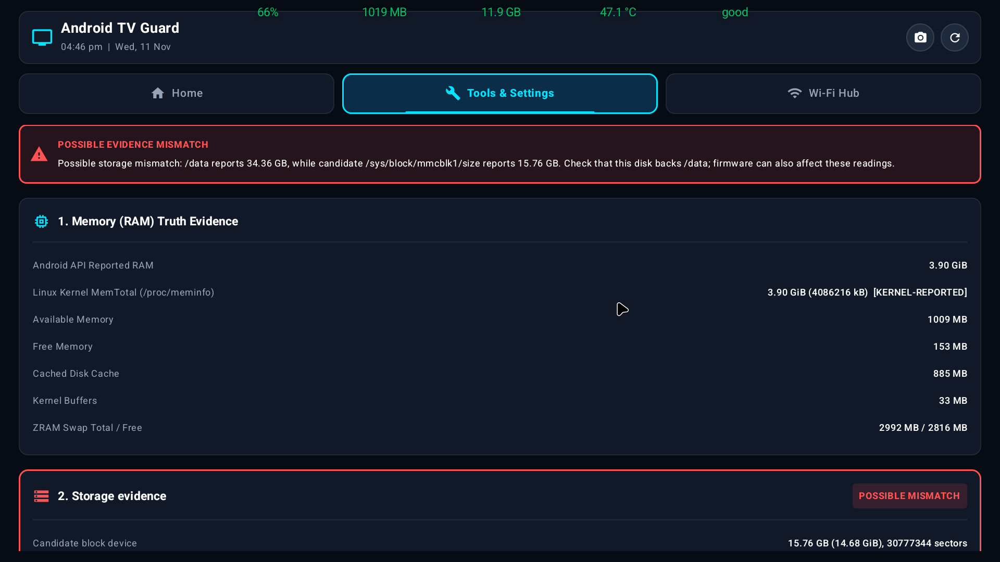
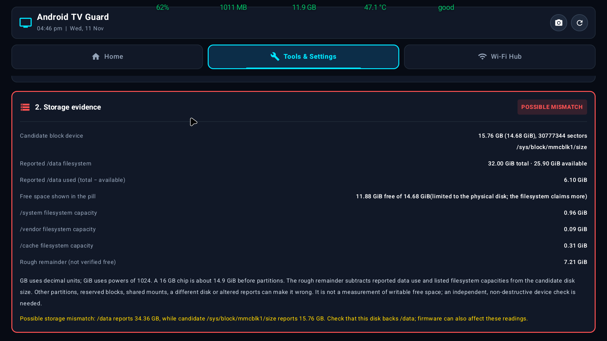
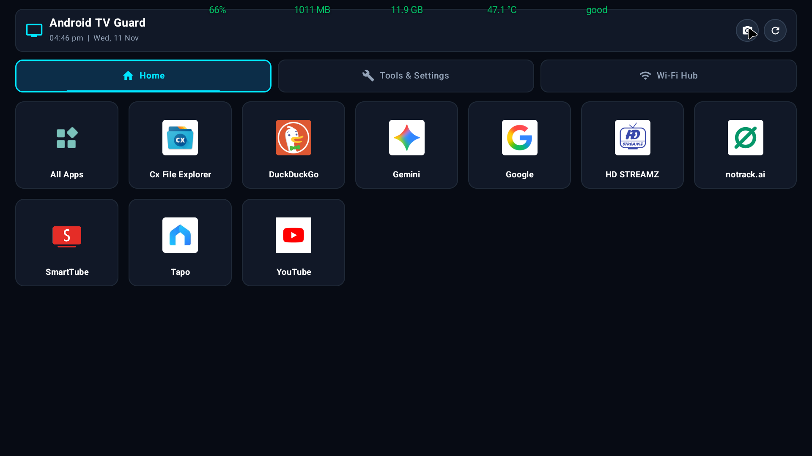
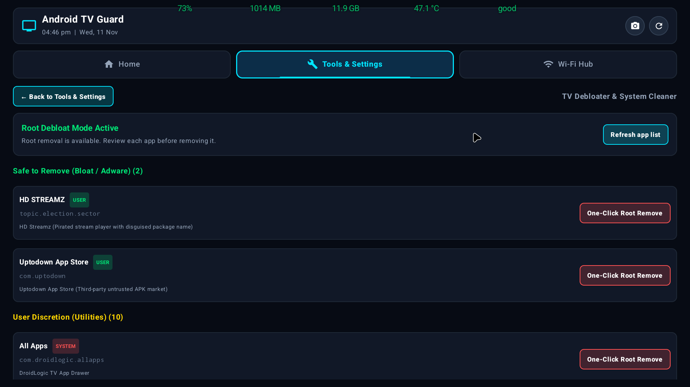

What it is actually for · இது எதற்காக
🧹 Remove the preinstalled junk
Most cheap Android TV boxes ship with pirate streaming players, third-party stores, ad-heavy installers and vendor telemetry or updater services you never asked for. They take the box’s limited storage and memory and slow everything down. TV Guard lists them, sorts them by risk, protects the system pieces that must never be removed, and removes only what you pick — with one OK press on a rooted box, or by sending the ready-made adb command it prints on an unrooted one. Nothing is removed without your confirmation.
மலிவான ஆண்ட்ராய்டு டிவி பெட்டிகள் தேவையற்ற ஸ்ட்ரீமிங் செயலிகள், மூன்றாம் தரப்பு ஸ்டோர்கள், விளம்பர நிறுவிகள், விற்பனையாளர் telemetry ஆகியவற்றுடன் வருகின்றன. அவை சேமிப்பையும் நினைவகத்தையும் எடுத்து எல்லாவற்றையும் மெதுவாக்குகின்றன. TV Guard அவற்றைப் பட்டியலிட்டு, ஆபத்தின்படி பிரித்து, அழிக்கவே கூடாத அமைப்புப் பகுதிகளைப் பாதுகாத்து, நீங்கள் தேர்ந்தெடுப்பதை மட்டும் நீக்குகிறது. உறுதி இல்லாமல் எதுவும் நீக்கப்படாது.
🚀 A home screen built for a remote
Set TV Guard as Home and the box no longer boots into the vendor home screen with its small targets and rows you did not ask for. You get real app icons, favourites first, large focus that is always visible from the sofa, and a short path to the tools. Hide the apps you never open — Tools lists every app with a tick box — and keep the rest. Extras start switched off, so the launcher itself stays light and nothing of its own runs in the background until you switch the strip on; turn on the hub, screenshots or RAM boost only when you want them.
TV Guard-ஐ Home ஆக அமைத்தால், விற்பனையாளர் முகப்பு விளம்பர வரிசையுடன் வராது. உண்மையான ஐகான்கள், பிடித்தவை முதலில், சோஃபாவிலிருந்து தெரியும் பெரிய focus, கருவிகளுக்குச் சிறு வழி. பயன்படுத்தாத செயலிகளை மறையுங்கள்; கூடுதல் வசதிகள் இயல்பாக அணைந்தே இருக்கும்.
📲 Files and remote, over Wi-Fi
No USB stick and no second file manager. Switch the hub on, open the address it shows in a phone browser on the same Wi-Fi, and drag an APK or any file onto the TV, then install it from the TV’s own list. The same page shows the TV’s screenshots for download, types text into TV search boxes, sends direction and OK keys, takes a screenshot and frees memory. It is off by default and runs only while you leave it on.
USB தேவையில்லை, இரண்டாவது கோப்பு மேலாளர் தேவையில்லை. ஹப்பை இயக்கி, காட்டப்படும் முகவரியை அதே வைஃபையில் உள்ள தொலைபேசி உலவியில் திறந்து APK அல்லது கோப்பை டிவிக்கு இழுத்துப் போடுங்கள்; டிவியின் பட்டியலிலிருந்து நிறுவுங்கள். அதே பக்கம் டிவி திரைப்படங்களையும், தேடல் தட்டச்சு, திசை/OK விசைகள், திரைப்படம், நினைவக விடுவிப்பு ஆகியவற்றையும் தரும். இயல்பாக அணைந்தே இருக்கும்.
Honest limits: removal needs root or ADB, because Android requires one of them; a box with neither can only uninstall apps you installed yourself. The hub has no password or encryption — anyone on your network with the address can see, upload or delete files while it is on. And this is not an antivirus: it reports what Android and the hardware expose, and shows you when firmware disagrees with itself.
Ten real screenshots · பத்து உண்மையான திரைகள்
Captured on the owner's Sony Bravia with the app's own Take Screenshot button, at 1920×1080, English interface, from the 1.5 build. Nothing here is a mock-up or an illustration. Tap any image to open it full size.
உரிமையாளரின் Sony Bravia டிவியில் ஆப்-இன் திரைப்படக் கருவியால் 1920×1080 அளவில் எடுக்கப்பட்டவை. இவை மாதிரிப் படங்கள் அல்ல. பெரிதாகப் பார்க்கப் படத்தைத் தொடவும்.










70% · 990 MB · 11.9 GB · 46.6 °C · good. No panel behind it, and the reading the owner checked in 1.5.









These are this TV's own settings, not the app's defaults, and they are not a security certification. No account names, messages, phone numbers or addresses appear in them. Tamil screens are produced by switching the app's language and are not pictured here yet.
What the strip shows
| Item | What it means |
|---|---|
Processor load — 70% | How busy the TV's processor is right now. High for a while on a TV box usually means an app is doing heavy work in the background. |
Free RAM — 990 MB | Memory that is genuinely available. Android reuses memory, so a low number is not automatically a fault, but a persistent one can make the TV slow. |
Free storage — 11.9 GB | Space that can actually be written. See the next section: this is the number that needed the most work. |
Temperature — 46.6 °C | The thermal sensor the TV exposes. If none is exposed, the strip says -- rather than inventing a value. |
| Internet quality — a colour | Green good, yellow usable, red poor. There is no text explaining it, by request — the colour alone is the reading. |
The strip has no background panel, so it can sit over any app without hiding the picture. It is drawn above other apps, which is why Android asks for "Display over other apps"; secure or system screens may still hide it.
Why the free-storage number needed three attempts
This TV box reports a 32.00 GiB data partition on a chip that is physically 14.68 GiB. Android's own storage API returns that inflated figure, so any app that simply prints it will show a number the drive cannot hold — the owner saw 26.0 GB, then 25.9 GB, and rejected both.
- Reading the data partition alone gave the impossible number. Rejected.
- Comparing free space to the partition's own size still trusted the firmware. Rejected.
- The physical disk —
/sys/block/mmcblk0/size, 30,777,344 sectors, 15.76 GB — is the only trustworthy source. Free space is now scaled to it, which gives the 11.9 GB in screenshot 5.
This is not a guess and not a rounded-down display trick: the app cross-checks the filesystem against the block device, and when they disagree it shows the smaller, real figure and says why. Screenshot 7 shows the three rows side by side. The same calculation is covered by unit tests built from this TV's exact numbers.
Using it with a remote
- Moving the strip: open the options with the Menu key and choose the position. The strip sits at the top by default and stays where you put it.
- Options open with Menu. There is no long-press menu, because a remote sends OK before the app can tell a press from a hold.
- The grid is the launcher: D-pad to an app, OK to open it. The screenshot button is in the top-right of the home bar.
- Every control can be reached by D-pad. Nothing on a TV screen should need a finger.
- Hidden apps are managed in Tools, where every installed app is listed with a tick box, so hiding one is a choice rather than a guess.
Installing an APK from your phone
- On the TV, open Tools → Wi-Fi transfer and note the address, for example
http://192.168.10.104:8080. - Type that address into a browser on a phone connected to the same Wi-Fi. No app is needed on the phone.
- Upload the APK. Choose the file, then wait for the upload to finish.
- On the TV, open the file from the hub's own list and confirm the install. Android asks, and that is deliberate — nothing is installed silently.
What it does not do
It cannot prove your TV is safe
It reports what Android and the hardware expose: load, memory, storage, temperature, connectivity, and which apps can be disabled. It cannot see inside other apps, and it cannot make a dishonest firmware report the truth to other apps — it can only show you that the firmware is lying, as in the storage section above.
The temperature can be missing
Some TVs expose no readable thermal zone. The strip then shows --. A missing reading is never filled with a plausible-looking number.
The internet colour is a judgement, not a speed test
It reflects reachability and latency at that moment. A green dot does not mean a video will play in 4K, and a red one does not mean the network is down for good.
Owner-tested, not universally verified
The owner installed earlier versions on a physical Sony Bravia and confirmed the launcher, the strip, D-pad focus, the file hub and both languages. Emulator tests cover the update path and remote navigation. That is not a test of every Android TV box, and not a Play Protect clearance. Stop if Android or Play Protect warns.
தமிழ் — வழிகாட்டி
நிலைப் பட்டை என்ன காட்டுகிறது
திரையின் மேலே ஒரே வரியில் ஐந்து அளவுகள்: செயலி சுமை (%), இலவச RAM (MB), இலவச சேமிப்பு (GB), வெப்பநிலை (°C) மற்றும் இணையத் தரம் — பச்சை / மஞ்சள் / சிவப்பு நிறமாக மட்டும். பின்னணிப் பலகை இல்லை; எனவே எந்தச் செயலியின் மேலும் படத்தை மறைக்காமல் இருக்கும். ரிமோட்டால் நகர்த்தலாம்; இயல்பாக மேலேயே இருக்கும்.
சேமிப்பு எண் ஏன் மூன்று முறை மாறியது
இந்த டிவி 14.68 GiB சிப்பில் 32.00 GiB பகிர்வைக் காட்டுகிறது. அதனால் Android தரும் எண்ணை அப்படியே காட்டினால் இயலாத அளவு வரும் (26.0 GB, பின்னர் 25.9 GB — இரண்டும் நிராகரிக்கப்பட்டன). இப்போது இயற்பியல் வட்டு அளவுடன் (/sys/block/mmcblk0/size, 15.76 GB) ஒப்பிட்டு, உண்மையான 11.9 GB காட்டப்படுகிறது. திரை 7-இல் மூன்று வரிகளையும் ஒப்பிட்டுப் பார்க்கலாம்.
ரிமோட் பயன்பாடு
விருப்பங்கள் Menu விசையால் திறக்கும்; நீண்ட அழுத்தல் மெனு இல்லை. பட்டையின் இயக்க/அணைப்பு சுவிட்சு தனியாக உள்ளது — மேல் நிலைப் பட்டையை அணைத்தாலும் பட்டை அணைக்கப்படாது. திரையில் உள்ள அனைத்துக் கட்டுப்பாடுகளையும் D-pad-ஆல் அடையலாம். மறைக்கப்பட்ட செயலிகள் Tools பகுதியில் முழுப் பட்டியலுடன் தேர்வுச் சிறுகுட்டைகளாக உள்ளன.
தொலைபேசியிலிருந்து APK நிறுவுதல்
டிவியில் Tools → Wi-Fi transfer திறந்து, காட்டப்படும் முகவரியை (எ.கா. http://192.168.10.104:8080) ஒரே Wi-Fi-இல் உள்ள தொலைபேசி உலாவியில் தட்டச்சு செய்யவும். கோப்பைப் பதிவேற்றிய பிறகு, டிவியின் பட்டியலிலிருந்து திறந்து நிறுவலை உறுதிப்படுத்தவும். Android கேட்கும்; அதைத் தவிர்க்க வேண்டாம்.
என்ன செய்யாது
இது பாதுகாப்புச் சான்று அல்ல. மற்ற செயலிகளின் உள்ளே பார்க்க முடியாது. வெப்பநிலை கிடைக்காவிட்டால் -- என்று காட்டும்; ஊகமான எண் வைக்காது. இணைய நிறம் அந்த நேரத்தின் தரத்தை மட்டுமே குறிக்கும். உரிமையாளர் Sony Bravia டிவியில் சோதித்தது; அனைத்து டிவி மாடல்களுக்கும் உத்தரவாதம் அல்ல; Google ஒப்புதல் அல்ல.
Download · பதிவிறக்கம்
1.5.1 is the current version. The owner installed this exact build on a physical Sony Bravia and reported it working — the strip read 78% / 996 MB / 11.9 GB / 46.0 °C / good. It installs in place over 1.5 with the same signing key, so favourites, hidden apps and saved choices stay.
Get the APK and checksum · APK-ஐப் பெறுங்கள்
Not a Play Protect clearance, and no other TV model was tested. If Android or Play Protect warns you, stop — do not bypass it. The Wi-Fi hub has no password or encryption, so use it on a network you trust and switch it off when finished.
The APK is also mirrored on the release page and the source is on GitHub.